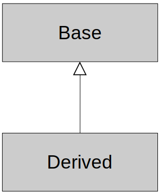
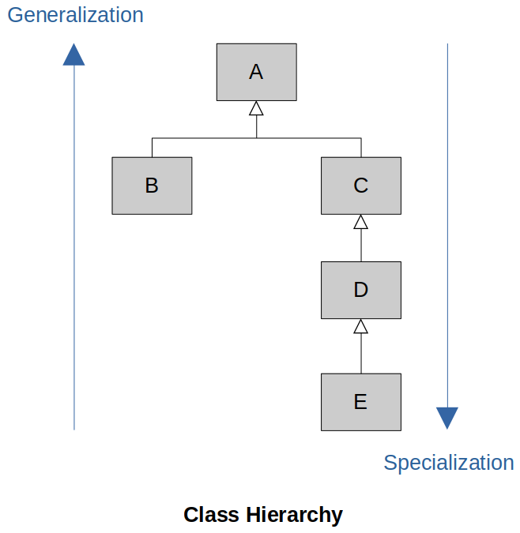
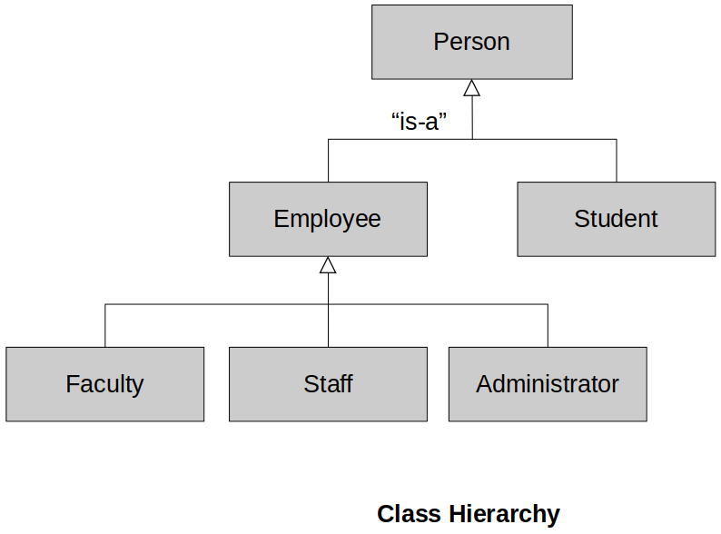
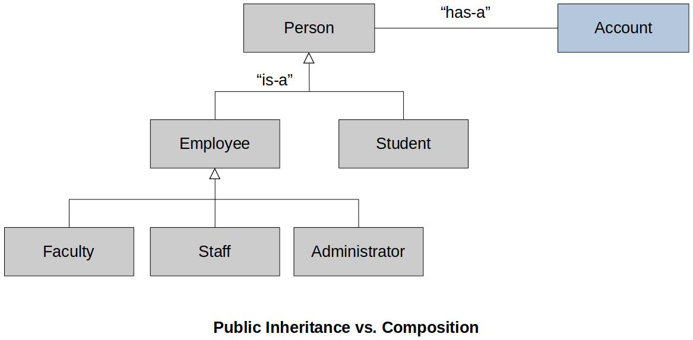
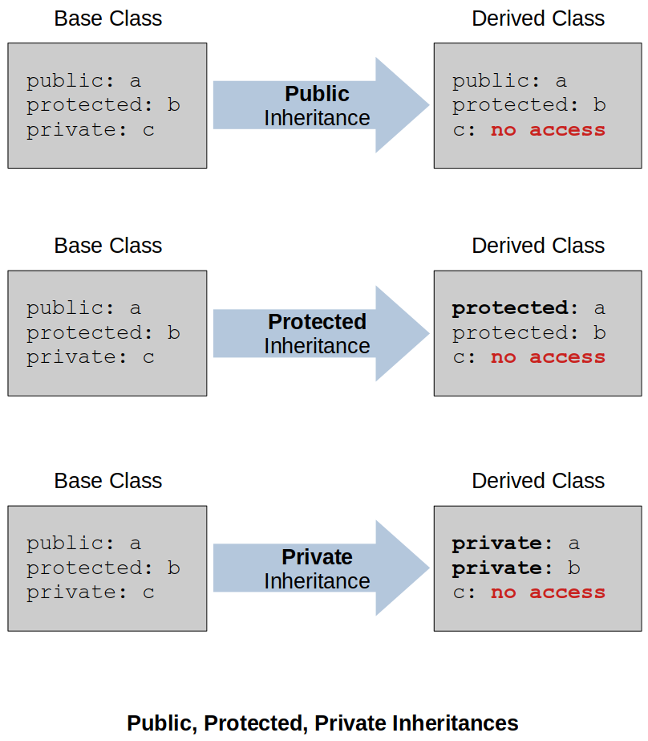
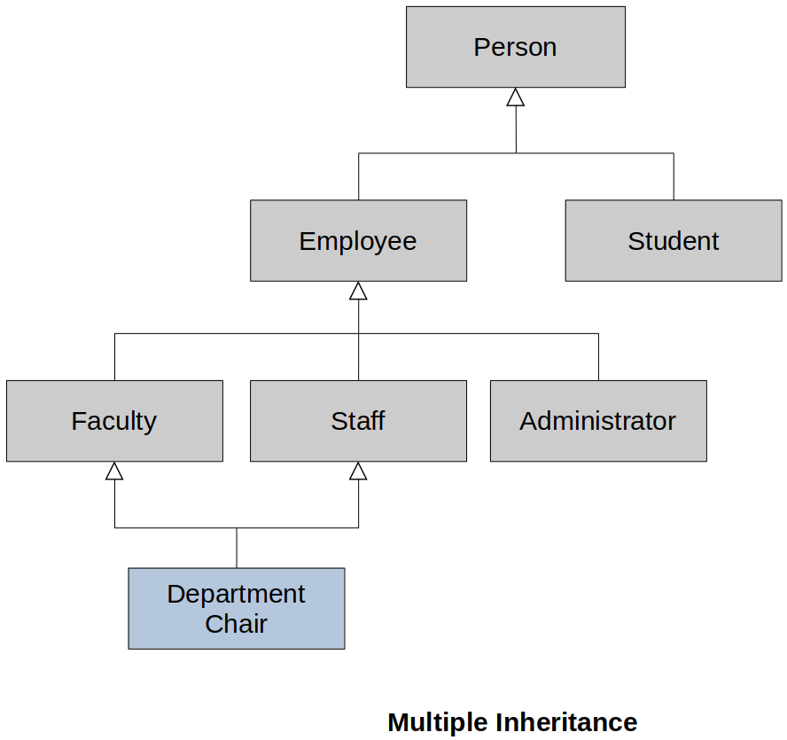

Home | Projects | Notes > C++ Programming > Inheritance
What is inheritance? Why is it useful?
Terminology and notation
Inheritance vs. Composition
Deriving classes from existing classes
Types of inheritance
protected members and class access
Constructors and destructors
Passing arguments to base class constructors
Order of constructor and destructors calls
Redefining base class methods
Class hierarchies
Multiple inheritance
Inheritance allows for creating new classes that modify the behavior of their parent classes.
Provides a method for creating new classes from existing classes
The new class contains the data and behaviors of the existing class
Allows for reuse of existing classes
Allows us to focus on the common attributes among a set of classes
Allows new classes to modify behaviors or existing classes to make it unique without actually modifying the original class
This is important since the existing class has already been tested and it's probably being reused by other applications. So, we really don't want to modify it at all.
Player, Enemy, Level Boss, Hero, Super Player, etc.
These classes might share some attributes such as health, position, etc.
Maybe all other classes are some specializations of the Player class.
Account, Savings Account, Checking Account, Trust Account, etc.
Classes for banking system
Withdraw, deposit functionalities are common in these classes.
Shape, Line, Oval, Circle, Square, etc.
Classes for graphic design system
Person, Employee, Student, Faculty, Staff, Administrator, etc.
Classes for the university personnel system
Account
balance, deposit, withdraw, ...
Savings Account
balance, deposit, withdraw, interest rate, ...
Checking Account
balance, deposit, withdraw, minimum balance, per check fee...
Trust Account
balance, deposit, withdraw, interest rate...
Without inheritance (Code duplication)
xxxxxxxxxx151class Account {2 // balance, deposit, withdraw, . . .3};4
5class Savings_Account {6 // balance, deposit, withdraw, interest rate, . . .7};8
9class Checking_Account {10 // balance, deposit, withdraw, minimum balance, per check fee, . . .11};12
13class Trust_Account {14 // balance, deposit, withdraw, interest rate, . . .15};Here, each class is independent of each other.
With inheritance (Code reuse!)
xxxxxxxxxx211class Account {2 // balance, deposit, withdraw, . . .3};4
5class Savings_Account : public Account {6 // interest rate, specialized withdraw, . . .7 // ------------- --------------------8 // simply "add" "modify" the behavior of the parent class's attributes9 // to the to meet its requirement10 // inherited11 // attributes of12 // Account class13};14
15class Checking_Account : public Account {16 // minimum balance, per check, fee, specialized withdraw, . . .17};18
19class Trust_Account : public Account {20 // interest rate, specialized withdraw, . . .21};Here, these classes are now interrelated.
Savings_Account,Checking_Account,Trust_Accountclasses depend on theAccountclass, and there is an inheritance hierarchy.
Inheritance
Process of creating new classes from existing classes
Reuse mechanism
Single inheritance
A new class is created from another 'single' class
Multiple inheritance
A new class is created from two (or more) other classes
Base class (parent class, super class)
The class being extended or inherited from
(The following is the UML Class Diagram.)

Derived class (child class, sub class)
The class being created from the base class
Will inherit attributes and operations from base class
"Is-A" relationship
Public inheritance
Derived classes are sub-types of their base classes
Can use a derived class object wherever we use a base class object
e.g., A savigns account "Is-A" account
Generalization
Combining similar classes into a single, more general class based on common attributes
The more general class is more abstract, and therefore can be potentially be reused more easily.
Specialization
Creating new classes from existing classes proving more specialized attributes or operations
Inheritance or Class Hierarchies
Organization of our inheritance relationships so that our code can be more effectively reused
When we design our program, we use both generalization and specialization to make the code more organized and reusable
C++ does not have singly-rooted hierarchy.
Java does! The Object class is the root class.
Class hierarchy example 1
Classes:
A (root class)
B is derived from A
B is an A
B is not a C - There is no inheritance relationship directly between B and C.
C is derived from A
D is derived from C
E is derived from D
E is also a C since inheritance is transitive
E is also an A

Class hierarchy example 2
Classes:
Person (root class) - The most general/abstract class in this class hierarchy.
Employee is derived from Person
Student is derived from Person
Student is a person - Student class inherits the attributes and operations of the Person class.
Student is NOT an Employee
Faculty is derived from Employee
Staff is derived from Employee
Staff is an Employee, and in fact, is also a Person
Administrator is derived from Employee
[!] Note: Notice that the relationships are NOT bi-directional! A Person is not necessarily an Employee because it could be a student.

Both allow reuse of existing classes.
Composition is a common design pattern for reuse, and you'll see it used much more frequently than inheritance. But, we can use both inheritance and composition together to create powerful frameworks that allow us to reuse existing code.
"is-a" relationship between derived and base classes
Employee "is-a" Person
Checking Account "is-a" Account
Circle "is-a" Shape
Derived classes automatically inherit all of the base classes' attributes and operations.
Not all relationship can be described in terms of inheritance.
"has-a" relationship
Person "has a" Account (But a Person is not an Account)
Player "has-a" Special Attack
Circle "has-a" Location
Using a combination of inhertiance and composition, we can express complex relationships between classes and leverage code reuse.
When we model class data members, we're using composition.
Many times the instance variables are primitive types, so we don't include them in class diagrams, but the concept is the same.

We will use the term composition to simply mean it has a relationship, and we won't be concerned about whether the Account object can logically exist without being associated with a Person object.
Does a Student object also have an account?
What a bout a Faculty member?
If the "is-a" relationship dosn't make sense, then don't use public inheritance.
Other times it's not so clear. A rule of thumb when using inheritance is to step back, look at your design and be sure that the inheritance is appropriate.
If you can model a relationship with composition, then you should consider doing that first since inheritance adds more complexity to your design.
In this case, an inheritance relationship between student and account simply doesn't make sense, so we use composition.
Person Class
xxxxxxxxxx61class Person2{3private:4 std::string name; // "has-a" name5 Account account; // "has-a" account6}; Composition is a common design pattern for reuse and you'll see it used much more frequently than inheritance. But we can use both inheritance and composition together to create powerful frameworks that allow us to reuse existing code.
public
Most common
Establishes "is-a" relationship between Derived and Base classes
private and protected (beyond our scope)
Establishes "derived class has-a base class" relationship
"Is implemented in terms of" relationship
Different from composition
C++ Derivation Syntax
xxxxxxxxxx91class Base2{3 // Base class members . . .4};5
6class Derived: <access_specifier> Base7{8 // Derived class members . . .9};Note:
<access_specifier>can be:public,private, orprotected(if not provided,privateinheritance by default)
xxxxxxxxxx91class Account2{3 // Account class members . . .4};5
6class Savings_Account: public Account7{8 // Savings_Account class members . . .9};Savings_Account "is-a" Account.
Now, a Savings_Account inherits everything in the account class, and it's free to implement its own specialized behaviors based on the behavior it inherited from account.
C++ Creating Objects
xxxxxxxxxx71Account account{};2Account *p_account = new Account();3
4account.deposit(1000.0);5p_account->withdraw(200.0);6
7delete p_account;xxxxxxxxxx71Savings_Account sav_account{};2Savings_Account *p_sav_account = new Savings_Account();3
4sav_account.deposit(1000.0);5p_sav_account->withdraw(200.0);6
7delete p_sav_account;
Protected Members & Class AccessThe protected class member modifier
xxxxxxxxxx51class Base2{3protected:4 // Protected Base class members . . .5};
Accessible from the
Baseclass itselfAccessible from classes derived from
BaseNot accessible directly from objects of either the
Baseclass or of the derived class (protectedclass members act likeprivatemembers unless there is inheritance involved.)

A derived class inherits from its base class.
The base part of the derived class MUST be initialized BEFORE the derived class initialized.
This makes sense since the derived class might use base class information during its own initialization.
When a derived object is created, constructors are invoked in the following order:
Base class constructor executes
Derived class constructor executes
Class destructors are invoked in the reverse order as constructors
The derived part of the derived class MUST be destroyed BEFORE the base class destructor is invoked
When a derived object is destroyed, destructors are invoked in the following order:
Derived class destructor executes
Base class destructor executes
Each destructor should free resources allocated in it's own constructors
A derived class does NOT inherit
Base class constructors
Base class destructor
Base class overloaded assignment operators
Base class friend functions
However, we can invoke the base class constructors, destructors, and overloaded assignment operators from the derived classes. C++11 allows explicit inheritance of base 'non-special' constructors with:
using Base::Base; anywhere in the derived class declaration
Lots of rules involved, often better to define constructors yourself.
Lots of rules include:
Default copy and move constructors are not included.
Each inherited constructor has the same access specifier as its corresponding base class constructor.
If you provide an overloaded constructor in the derived class, then the base class overloaded constructor is not inherited.
A base class' constructor default arguments are not inherited.
And many more ...
The using statement can be useful and save a bit of typing, but it is often preferred not to use this feature and write out the constructors necessary in the derived classes and invoke the base class constructors as needed. It isn't that much more typing and it's very clear to programmers that come after you to modify your code exactly what you're doing
Passing arguments to base class constructors (See the example below!)
The base part of a derived class must be initialized first
How can we control exactly which base class constructor is used during initialization?
We can invoke whichever base class constructor we wish in the initialization list of the derived class.
If you don't explicitly invoke the base overloaded constructor, then the no-args constructor will be invoked automatically since remember since the base part must be initialized anyways.
Constructors, destructors and class initialization
xxxxxxxxxx131class Base2{3public:4 Base() { cout << "Base constructor" << endl; }5 ~Base() { cout << "Base destructor" << endl; }6};7
8class Derived : public Base9{10public:11 Derived() { cout << "Derived constructor" << endl; }12 ~Derived() { cout << "Derived destructor" << endl; }13};xxxxxxxxxx91{2 Base base; // Base constructor3} // Base destructor4
5{6 Derived derived; // Base constructor7 // Derived constructor8} // Derived destructor9 // Base destructorPassing arguments to base class constructors
xxxxxxxxxx131class Base2{3public:4 Base();5 Base(int);6 . . . 7};8
9Derived::Derived(int x)10 : Base(x), {/* optional initializers for Derived */}11{ 12 // code13};xxxxxxxxxx191class Base2{3 int value;4public:5 Base() : value{0}6 { cout << "Base no-args constructor" << endl; }7 Base(int x) : value{x}8 { cout << "int Base constructor" << endl; }9};10
11class Derived : public Base12{13 int doubled_value;14public:15 Derived() : Base{}, doubled_value{0}16 { cout << "Derived no-args constructor" << endl; }17 Derived(int x) : Base{x}, doubled_value{x * 2}18 { cout << "int Derived constructor" << endl; }19};Notice that we could have implemented the overloaded constructors as delegating constructors. But, here I wanted to keep the display messages clear so that we would follow the calls.
xxxxxxxxxx81Base base; // Base no-args constructor2
3Base base{100}; // int Base constructor4Derived derived; // Base no-args constructor5 // Derived no-args constructor6
7Derived derived{100}; // int Base constructor8 // int Derived constructorAs you can see from this example, you have complete control as to which base class constructors to invoke from your derived class constructors.
= with Derived ClassesCopy/move constructors and overloaded operator = (i.e., copy assignment operator):
Not automtically inherited from the base class
You may not need to provide your own
Compiler-provided versions may be just fine
We can explicitly invoke the base class versions from the derived class
Often you do not need to provide you own
If you DO NOT define them in the derived class, then the compiler will create them automatically and call the base class' version.
If you DO provide the derived versions, then YOU must invoke the base versions explicitly yourself.
Be careful with raw pointers
Especially if base and derived each have raw pointers
Provide them with deep copy semantics
Copy constructor
Can invoke base copy constructor explicitly (Derived object other will be sliced)
xxxxxxxxxx51Derived::Derived(const Derived &other)2 : Base(other), { /* Derived initialization list */ }3{4 // code5}Since
Derive"is-a"Base, we can pass in aDriveto a method that expects aBase.In this case, the compiler uses "slicing" and slices out the base part of the derived object. Slicing sometimes cause issues, but in this case, it's fine since what we want to do is copy the base part of the derived object.
The following example shows slicing in action:
xxxxxxxxxx91class Base2{3 int value;4public:5 // Same constructors as previous example6 7 Base(const Base &other) : value{other.value}8 { cout << "Base copy constructor" << endl; }9};xxxxxxxxxx101class Derived : public Base2{3 int doubled_value;4public:5 // Same constructors as previous example6
7 Derived(const Derived &other)8 : Base(other), doubled_value{other.doubled_value}9 { cout << "Derived copy constructor" << endl; }10};In this case, we're explicitly copying the base part of
otherby invoking the base class copy constructor in the derived copy constructor's initialization list.Notice that we pass the
otherobject, which will be sliced to yield its base part. Once the base part is copied, we can take care of copying double value and then display a message to the console. The move constructor works the same way!
Operator = (Overloaded copy assignment operator)
xxxxxxxxxx141class Base2{3 int value;4public:5 // Same constructors as previous example6 7 Base &operator=(const Base &rhs)8 {9 if (this != &rhs)10 value = rhs.value; // assign11 12 return *this;13 }14};xxxxxxxxxx171class Derived : public Base2{3 int doubled_value;4public:5 // Same constructors as previous example6
7 Derived &operator=(const Base &rhs)8 {9 if (this != &rhs)10 {11 Base::operator=(rhs); // Assign Base part12 doubled_value = rhs.doubled_value; // Assign Derived part13 }14 15 return *this;16 } 17};
Derived class can directly invoke base class methods
Derived class can override or redefine base class methods
Very powerful in the context of polymorphism
In order to redefine or override a method, you simply provide a method in the derived class with the "same name and signature" as a method in the base class.
Binding of which method to use is done at compiler time
By default, C++ does static binding of method calls.
Meaning that the compiler determines which methods are called based on what it sees at compile time.
Static binding is very efficient and that's why it's the default in C++.
Derived class objects will use Derived::deposit.
But, we can explicitly invoke Base::deposit from Derived::deposit.
OK, but limited - much more powerful approach is dynamic binding (i.e., binding that takes place at run-time).
Using and redefining base class methods
xxxxxxxxxx181class Account2{3public:4 void deposit(double amount) { balance += amount; }5};6 7class Savings_Account : public Account8{9public:10 // Redefine base class method11 void deposit(double amount) 12 {13 amount += some_interest;14 Account::deposit(amount); // Invoke base class method15 // Must prefix the method call with the 'Account' class so the compiler knows that 16 // we're calling the deposit method in the 'Account' class!17 }18}It's important that we don't try to do the actual deposit in the savings account method. Instead, let the
Accountclass do what it knows how to do. If the base functionality fordeposit()ever changes, it won't affect ourSavings_Acountdeposit method since all it's doing is delegating this to the account class.
Static binding of method calls
xxxxxxxxxx81Base b;2b.deposit(1000.0); // Base::deposit (because 'b' is a 'Base' class object)3
4Derived d;5d.deposit(1000.0); // Derived::deposit (because 'd' is a 'Derived' class object)6
7Base *ptr = new Derived();8ptr->deposit(1000.0); // (Valid since 'Derived' is a 'Base') Base::deposit ???L7, L8: Due to the type of
ptr,ptr->deposit()is statically bound toBase::depositat compile time. So, the compiler will call theBase::depositmethod because it sees that pointer is a pointer to aBaseclass. However, in this case, it would make much more sense for the compiler to call theDerived::depositsince we have created aDerivedobject.
This can be achieved by dynamic binding!
A derived class inherits from two or more base classes at the same time.
The base classes may belong to unrelated class hierarchies.
Note:
Beyond the scope of this course
Some compelling use-cases, but in many cases design can be refactored so that the multiple inheritance an be avoided which results in a better design
Can be very complex any many developers don't fully understand it, therefore it can be easily misused.

C++ syntax
xxxxxxxxxx41class Department_Chair : public Faculty, public Administrator2{3 . . .4};
Department_Chairis aFacultyand is aAdministrator.